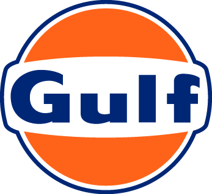
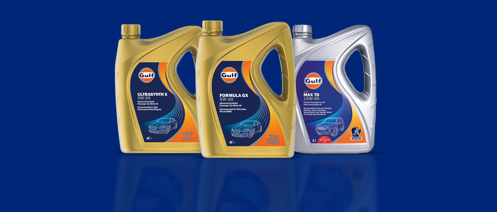
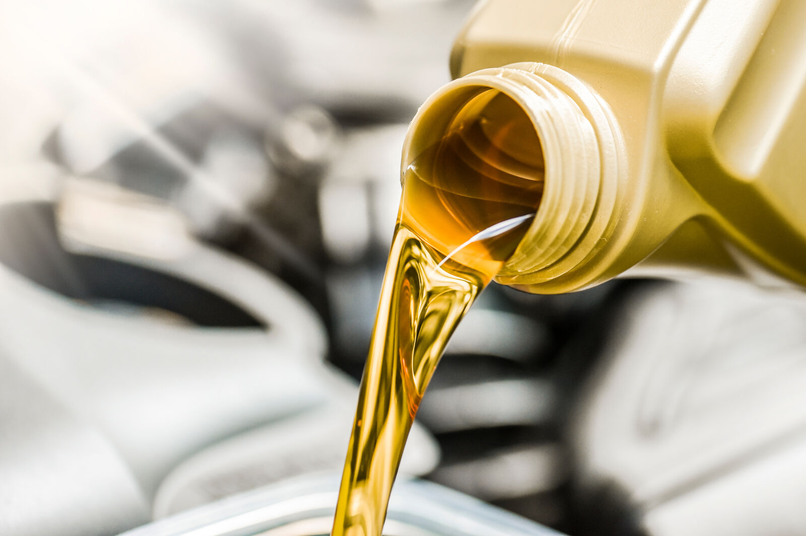

Знаем, че спокойствието по пътя е безценно — затова винаги отиваме една крачка по-далеч, за да ви осигурим надеждната производителност, от която се нуждаете, за да стигнете до дестинацията си безопасно и гладко, навреме, всеки път. Знаем също, че всички двигатели са различни — затова няма универсално моторно масло, което да пасва на всички. Затова сме създали богата гама доверени, изпитани и доказани решения, които експертно отговарят на нуждите на различните типове превозни средства.
Смазочните материали на Gulf са интелигентно създадени, за да сте винаги в най-сигурни ръце. Неудържими в стремежа си към ефективни решения на ежедневните предизвикателства на клиентите ни, продуктите ни отиват една крачка по-далеч от стандартното моторно масло, което удължава живота на двигателя, като го смазва, почиства, охлажда и защитава от корозия. Синтетичното масло на Gulf е специално създадено с мисъл за поддържана върхова производителност — предлага всички основни елементи на стандартното моторно масло и още. Поддържайки оптимален вискозитет и дебелина на масления филм както при ниски, така и при високи температури за по-добра защита на двигателя, то е устойчиво на окисляване за по-чист двигател и по-дълъг живот на маслото и осигурява превъзходна цялостна производителност в сравнение с минералните масла.
Сложните автомобилни двигатели работят при екстремни температури, с много движещи се части, които изискват правилно смазване. Неправилното или неподходящото смазване може значително да повлияе на производителността и безопасността — което води до по-високи разходи за поддръжка с времето. Държим ви на пътя по-дълго със смазочни материали, формулирани с най-новите технологии и съобразени с всяко превозно средство и всяко притеснение.
Знаем колко разрушителни могат да бъдат повредите и лошата работа на двигателя — затова сме разработили разнообразие от иновативни решения, които отговарят на индивидуалните ви нужди. Намирането на правилното моторно масло за колата ви е от решаващо значение и понякога може да е трудно — но сме до вас, за да ви помогнем да изберете това, което е най-подходящо за вас.

Всеки страстен автомобилен ентусиаст се стреми към постоянно висока производителност. Тъй като двигателите продължават да се развиват — стават все по-малки, по-мощни и по-ефективни с всяка година — те изискват смазочен материал, който може да отговори на нуждите им. Gulf Formula е точно такъв смазочен материал — напълно синтетично масло, създадено да осигурява оптимална производителност дори при екстремни температури. То защитава срещу отлагания и износване и ефективно предотвратява бързото влошаване на маслото, което осигурява устойчива върхова производителност.
В света на шофирането условията, пред които сме изправени, са далеч от предвидимите. Натоварените пътища ни поставят пред постоянно променящи се и взискателни предизвикателства, които могат да се отразят на двигателите ни и да доведат до по-бързо натрупване на износване от очакваното. Можете да предотвратите този нежелан сценарий с Gulf Ultrasynth. Създаден като напълно синтетично масло, Gulf Ultrasynth включва усъвършенствани агенти Wear-Guard, специално разработени да предпазват компонентите на двигателя от вредните ефекти на износването и да осигуряват непрекъсната защита за плавно шофиране.
Когато става дума за издръжливост при дълги пътувания, двигателят на колата ви играе жизненоважна роля. За да се гарантира оптималната му работа, е от решаващо значение да поддържате двигателя чист, без вредни отлагания, които могат да доведат до муден ход, намалена ефективност и дори повреда на двигателя. Нашите смазочни материали Gulf Max, създадени с технологията Engine Clean Technology, активно предотвратяват натрупването на вредни отлагания в двигателя, което води до по-чист двигател с по-добра производителност за по-дълъг период. С Gulf MAX можете да се доверите на смазочен материал, който поддържа двигателя ви по-чист и в движение по-дълго.


Да можете да четете и разбирате степените на вискозитет на моторното масло е от съществено значение при избора на правилното масло за двигателя ви. Състоящи се от три части, степените зависят от климатичните условия, в които шофирате.
При многостепенните (multigrade) моторни масла числото преди „W“ показва вискозитетните характеристики на маслото при ниски температури (познати като зимни степени), а числата „YY“ показват вискозитетните характеристики при високи температури (познати като летни степени). Многостепенните моторни масла могат да работят ефективно както при ниски, така и при високи температури за по-добър студен старт и за защита на двигателя във всеки климат.